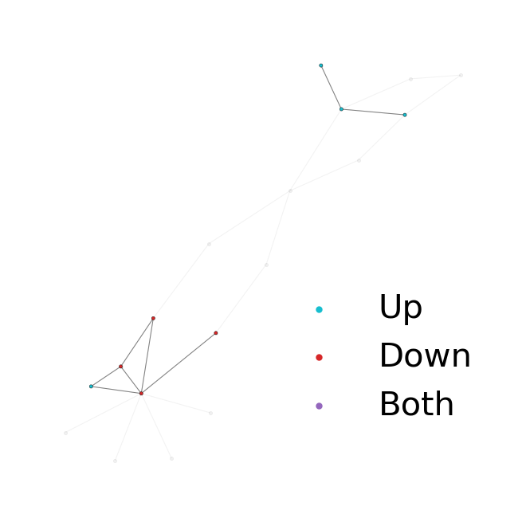
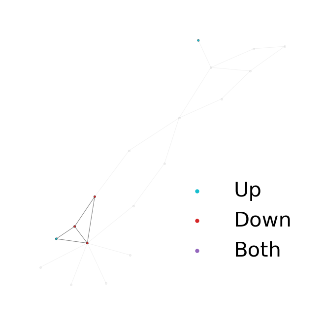
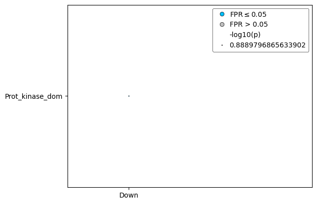

[1]:
import pandas as pd
import numpy as np
import networkx as nx
import matplotlib.pyplot as plt
from pybiomart import Dataset
import random
import dansy
[2]:
# First need to import and create an ID conversion dataframe
bm_dataset = Dataset(host = 'http://useast.ensembl.org', name='hsapiens_gene_ensembl',)
gene_ID_conv = bm_dataset.query(attributes=['ensembl_gene_id','external_gene_name','uniprotswissprot'])
# Importing a small reference file
ref = pd.read_csv('DANSy_test_ref.csv')
full_ref,_ = dansy.import_proteome_files(reference_file_suffix='Jan7_2025.csv', ref_file_dir='../')
[3]:
# Now creating only a small version of the ID conversion dataframe
small_id_conv = gene_ID_conv[gene_ID_conv['UniProtKB/Swiss-Prot ID'].isin(ref['UniProt ID'])]
[99]:
# Building the dedansy object
dataset = pd.read_csv('Shimpi_Tan_RNA_seq_Results.csv')
small_dataset = dataset[dataset['ensembl_gene_id'].isin(small_id_conv['Gene stable ID'])]
small_dedansy = dansy.DEdansy(dataset=dataset, id_conv=gene_ID_conv,
data_ids='ensembl_gene_id',
uniprot_ref=full_ref)
large_cc = max(nx.connected_components(small_dedansy.G), key = len)
base_interpro = small_dedansy.interpro2uniprot
ref_G = small_dedansy.G
Starting to fetch n-grams.
Finished getting all n-grams
Starting to generate adjacency
Finished building adjacency.
Building the reference network information.
[135]:
# Getting the proteins within the largest connected component
random.seed(123)
prots2keep = set()
# Restricting protein choice to be neighbors of the SH2 or Kinase domains and 20 randomly chosen nodes from the largest connected component
nodes_2_check = list(nx.neighbors(ref_G, 'IPR000980')) + list(nx.neighbors(ref_G, 'IPR000719')) + random.sample(sorted(large_cc), k =30) +['IPR000980','IPR000719']
for node in nodes_2_check:
x = base_interpro[node]
prots2keep.update(x)
# Now getting 20 randomly from the largest cc
small_prots = random.sample(sorted(prots2keep), k=20)
[136]:
small_ref = full_ref[full_ref['UniProt ID'].isin(small_prots)]
small_id_conv = gene_ID_conv[gene_ID_conv['UniProtKB/Swiss-Prot ID'].isin(small_prots)]
small_dataset = dataset[dataset['ensembl_gene_id'].isin(small_id_conv['Gene stable ID'])]
[137]:
small_dedansy = dansy.DEdansy(dataset=small_dataset, id_conv=small_id_conv,
data_ids='ensembl_gene_id',
uniprot_ref=small_ref)
Starting to fetch n-grams.
Finished getting all n-grams
Starting to generate adjacency
Finished building adjacency.
Building the reference network information.
[138]:
x = small_dedansy.dataset
x = x.filter(['ensembl_gene_id','log2FoldChange_HAS2','padj_HAS2'])
x.rename({'log2FoldChange_HAS2':'log2_FoldChange','padj_HAS2':'padj'},axis=1, inplace=True)
x.to_csv('Small_test_deDANSy_dataset.csv',index=False)
[160]:
# Creating a toy dataset that can be used for testing if the package is working properly. This will distribute logfoldchanges across the gene and p-values
new_fcs = np.random.normal(0,5,20)
new_alphas = np.random.lognormal(size=20)
[161]:
x['log2_FoldChange'] = new_fcs
x['padj'] = 10**(-1*new_alphas)
[162]:
small_dedansy = dansy.DEdansy(dataset=x, id_conv=small_id_conv,
data_ids='ensembl_gene_id',
uniprot_ref=small_ref)
small_dedansy.create_contrast_metadata(comparisons=['loose','restrictive'],
fc_cols=['log2_FoldChange', 'log2_FoldChange'],
pval_cols=['padj','padj'],
fcs=[0.5,1],
alphas=[0.05,0.01])
small_dedansy.calc_DEG_ngrams('loose')
pos = nx.spring_layout(small_dedansy.G)
small_dedansy.plot_DEG_ns(pos)
Starting to fetch n-grams.
Finished getting all n-grams
Starting to generate adjacency
Finished building adjacency.
Building the reference network information.

[163]:
small_dedansy.calc_DEG_ngrams('restrictive')
small_dedansy.plot_DEG_ns(pos)
Will be overwriting existing DEG data.

[164]:
small_dedansy.calculate_scores(comps = ['loose', 'restrictive'],num_ss_trials=5, fpr_trials=1,min_pval=-4, processes=1,overwrite=True)
2025-08-11 12:17:24:.....Starting deDANSy scoring analysis with random seed: 1754929044
2025-08-11 12:17:24:.....Done with enrichment-based pruning for loose
2025-08-11 12:17:24:.....Done with enrichment-based pruning for restrictive
2025-08-11 12:17:24:.....Starting the false positive rate procedure.
2025-08-11 12:17:24:.....Finished FPR procedure for loose.
2025-08-11 12:17:24:.....Finished FPR procedure for restrictive.
2025-08-11 12:17:24:.....Preparing the FPR results for export
[165]:
small_dedansy.scores
[165]:
| Comparison | Separation_Score | Separation_Category | Separation_p | Separation_FPR | Distinction_Score | Distinction_Category | Distinction_p | Distinction_FPR | |
|---|---|---|---|---|---|---|---|---|---|
| Comparison | |||||||||
| loose | loose | 0.512952 | More | 0.833534 | 1.0 | 0.755102 | Unstable/Overlapping | 0.387094 | 1.0 |
| restrictive | restrictive | 0.817012 | More | NaN | 0.0 | 0.929458 | Unstable/Overlapping | NaN | 0.0 |
[166]:
x.to_csv('Small_test_deDANSy_dataset.csv',index=False)
[170]:
small_ref.to_csv('Testing_Reference_File.csv', index=False)
[172]:
small_id_conv.to_csv('Testing_ID_Conversion.csv', index=False)
[177]:
small_dedansy.calc_DEG_ngrams('restrictive')
ns = small_dedansy.DEG_network_sep()
Will be overwriting existing DEG data.
[180]:
if np.isnan(ns)==False:
print('Huh?')
Huh?
[186]:
small_dedansy.calculate_ngram_enrichment('loose',fpr_trials=100)
Will be overwriting existing DEG data.
[191]:
small_dedansy.ngram_results['loose']
[191]:
| variable | p | ngram | FPR | -log10(p) | FPR <= 0.05 | |
|---|---|---|---|---|---|---|
| 0 | Up | 0.140351 | IPR000980 | 0.000000 | 0.852785 | True |
| 1 | Up | 0.284211 | IPR015022|IPR000719|IPR000961|IPR001478 | 0.054054 | 0.546360 | False |
| 2 | Up | 0.284211 | IPR000980|IPR001496 | 0.043478 | 0.546360 | True |
| 3 | Up | 0.150000 | IPR002219|IPR003595|IPR014020|IPR000980|IPR006020 | 0.000000 | 0.823909 | True |
| 12 | Down | 0.300000 | IPR001452|IPR000719 | 0.000000 | 0.522879 | True |
| 13 | Down | 0.129128 | IPR000719 | 0.000000 | 0.888980 | True |
| 14 | Down | 0.342621 | IPR000719|IPR000961 | 0.176471 | 0.465186 | False |
| 15 | Down | 0.300000 | IPR000719|IPR000961|IPR011072|IPR015008|IPR001849 | 0.000000 | 0.522879 | True |
[194]:
small_dedansy.plot_ngram_enrichment('loose',p=0.99)

[ ]: